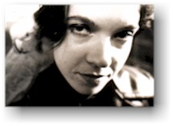

- mez -
Mez currently bastardises her arts practice via arts journalism in order to actualise her chrome hypaTeXtian visions at her website. . Riding the Meridian -- Women and Technology -- mez ". " -- Mez mez recommends these online literary links. wurk artist who gets static-slapped with labels like "electronic artist" and "multimedia practitioner" with terminal regularity.
|  |
|
.welche ohne Zweifel zu den bestaendigsten, produktivsten und innovativsten Kuenstlern heutzutage gehoert, die mit den Neuen Medien arbeiten'. 'Mez's Arbeiten mit Sprache haben beachtliche Auswirkungen auf den Sprachgebrauch vieler'. 2001 erhielt sie den VIF Preis durch die Humboldt-Universitat in Berlin,sie war 2001 nominiert fuer die hochangesehenenElectronic Literature Organisation's Fiction Award,und erhielt 2001 den 'JavaArtist Of The Year Award' durch JavaMuseum. Nimm dir Zeit und besuche ihre Solo Onlineshow im JavaMuseum www. |
 |
.artivist action that would make the most moderate of email list moderators stew in their static. mez is an internationally renowned internet artist who posts to many art-oriented email lists inorder to construct her "net. htm) was inherently "spam" - a type of unsoliticed and commercially-driven email - which therefore violated the nature of the list dynamics (that "nature" being defined as discussion focusing on new media art, rather than functioning as a forum for experimentation or art construction). This (surprisingly) runs contrary to Pierce's previously stated opinions and moderator decisions regarding mez's work, and its right to be displayed via the recode mailing list. |
|
spired and mutated according 2 the dynamics of an active network. without doubt one of the most consistent, prolific, innovative artists working in new media today. Mez's work with language has had a considerable effect on the language of many. She is the 2001 Resident Artist at the WCG, has been awarded the 2001 VIF Prize by the Humboldt-Universitat in Berlin, was shortlisted for the prestigious 2001 Electronic Literature Organisation's Fiction Award, and has just been awarded the JavaMuseums' Artist Of The Year 2001 Award. Return to Art Gallery List of Artists Last update 25 Sep. |
A site I really like: http://www.murlin.va.com.au/eyespace/mezgaru/linguid1.html